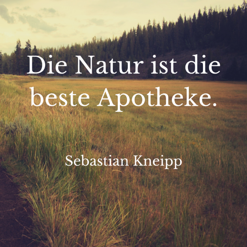

Wie die Natur in einem alten Skigebiet wieder Einzug hält
 https://www.faz.net/-hrx-a287w Menü schließenRessorts
Politik
Inland Wahl in Amerika Ausland Staat und Recht Die Gegenwart Politische Bücher Geschichte Europa denken Briefe an die HerausgeberWirtschaft
Digitec Unternehmen Mittelstand Auto & Verkehr Klima, Energie und Umwelt Konjunktur Brexit Arm und reich WohnenServices:
Immobilienmarkt Wirtschaftsräume im Wandel VorDenker (Corporate) Digital ResponsibilityFinanzen
Meine Finanzen Finanzmarkt Börsen & Märkte Mein Depot Börsenlexikon BörsenspielServices:
Handel 2020: TrendbarometerFeuilleton
Debatten Bücher Buchmesse Medien Kino Pop Bühne und Konzert Kunst Kunstmarkt Familie TV- & RadioprogrammServices:
Wertheim Village X LuminaleKarriere & HochSchule
Büro & Co Hörsaal Klassenzimmer Die KarrierefrageServices:
Aktuelle Stellenangebote Executive Channel Executive Lounge Recruiting leicht gemacht MBA in Corona-ZeitenSport
Fußball Formel 1 Mehr Sport Denk ich an Sport Tour de France Sportpolitik Rhein-Main-Sport Sport Live Sport in ZahlenGesellschaft
Menschen Kriminalität Unglücke Gesundheit Tiere Smalltalk Jugend schreibtServices:
Best AgerStil
Mode & Design Essen & Trinken Leib & Seele Trends & Nischen QuarterlyServices:
Ikea-Gutscheine Flaconi-Gutscheine Ausstattung im Home-OfficeRhein-Main
Frankfurt Region und Hessen Wirtschaft Kultur Sport VeranstaltungenTechnik & Motor
Motor Elektromobilität Technik DigitalServices:
Testberichte OTTO-Gutscheine Saturn-Gutscheine Darf es etwas mobiler sein?Wissen
Medizin & Ernährung Weltraum Leben & Gene Erde & Klima Physik & Mehr Archäologie & Altertum Geist & Soziales Forschung & Politik Ab in die Botanik NetzrätselServices:
Digitale Medizin 2020Reise
WetterServices:
F.A.Z. Leserreisen Expedia-Gutscheine Griechenland – das authentische ReisezielF+
Blogs
Podcasts
Multimedia
Video
Fotografie
Themen
Archiv
Information
Kontakt Datenschutz Nutzungsbedingungen Nutzungsbasierte Onlinewerbung ImpressumVerlag
Abo-Angebote Mediadaten/Werbung Traueranzeigen Presse Über die F.A.Z. Freiheit im Kopf Jobs bei der F.A.Z.FAZ.NET
Redaktion Blogs Newsletter E-Paper Mobile AngeboteService
RSS Stellenmarkt Börsen & Märkte Gutscheine Lebenswege © Frankfurter Allgemeine Zeitung GmbH 2001–2020
Alle Rechte vorbehalten.
Permalink: https://www.faz.net/-hrz-a287w
Weitersagen abbrechen Ressorts F+ Podcasts Blogs Themen Ticker Archiv Stellenmarkt Produkte Selection Gutscheine Testberichte FAZschule Lebenswege Immobilienmarkt Best Ager Newsletter Suche Stil Drinnen & DraußenWie die Natur in einem alten Skigebiet wieder Einzug hält
Suche abbrechen Sonderseite CoronavirusAktuelle Nachrichten aus Politik, Wirtschaft, Sport und Kultur
Herausgegeben von Gerald Braunberger, Jürgen Kaube, Carsten Knop, Berthold Kohler
Zeitung FAZ.NET
Startseite : 0 neue oder aktualisierte Artikel. Politik Inland Wahl in Amerika Ausland Staat und Recht Die Gegenwart Politische Bücher Geschichte Europa denken Briefe an die Herausgeber Wirtschaft Digitec Unternehmen Mittelstand Auto & Verkehr Klima, Energie und Umwelt Konjunktur Brexit Arm und reich Wohnen Finanzen Meine Finanzen Finanzmarkt Börsen & Märkte Mein Depot Börsenlexikon Börsenspiel Feuilleton Debatten Bücher Buchmesse Medien Kino Pop Bühne und Konzert Kunst Kunstmarkt Familie TV- & Radioprogramm Karriere Büro & Co Hörsaal Klassenzimmer Die Karrierefrage Sport Fußball Bundesliga Champions League Formel 1 Mehr Sport Denk ich an Sport Tour de France Sportpolitik Rhein-Main-Sport Sport Live Sport in Zahlen Gesellschaft Menschen Kriminalität Unglücke Gesundheit Coronavirus Tiere Smalltalk Jugend schreibt Stil Stil Mode & Design Essen & Trinken Leib & Seele Trends & Nischen Quarterly Rhein-Main Frankfurt Region und Hessen Wirtschaft Kultur Sport Veranstaltungen Technik Motor Elektromobilität Technik Digital Wissen Medizin & Ernährung Weltraum Leben & Gene Erde & Klima Physik & Mehr Archäologie & Altertum Geist & Soziales Forschung & Politik Ab in die Botanik Netzrätsel Reise Wetter AboRenaturierung : Wie die Natur in einem alten Skigebiet wieder Einzug hält
Von Bernd Steinle - Aktualisiert am 21.08.2020 - 07:08 Bildbeschreibung einblendenReine Natur: Die Hänge des Gschwender Horns sind wieder unversehrt - unten die Hauptabfahrt des Skigebiets vor und nach der Renaturierung. Bild: Ellen Urban
Après Ski – aber nachhaltig: Vor 25 Jahren wurde das Skigebiet am Gschwender Horn renaturiert. Heute sind vom früheren Pistenbetrieb kaum noch Spuren zu finden.
7 Min.Permalink: https://www.faz.net/-hrz-a287w
Weitersagen abbrechenD ie Idee klingt wie ein Zaubertrick: ein ganzes Skigebiet einfach so – poof! – verschwinden zu lassen. Wie ein Illusionskünstler das Kaninchen. Nur, dass sich in diesem Fall Skilifte, Stützmasten, Tal-, Mittel-und Bergstation, Pistenraupen, Werkstatt und „Skihaserlstall“ in Luft auflösen sollten. Als wären sie vom Erdboden verschluckt. Das war die Idee. Und die haben sie dann, so unrealistisch es auch klingen mag, am Gschwender Horn im Allgäu in die Tat umgesetzt.
Bernd Steinle
Redakteur im Ressort „Deutschland und die Welt“.
F.A.Z.Ein Vierteljahrhundert ist das jetzt her. Und aus heutiger Sicht, in einer vom Klimawandel geprägten Welt, wird immer deutlicher, dass sie damals am Gschwender Horn die richtigen Fragen gestellt und auf diese Fragen die richtigen Antworten gefunden haben.
Der Zauber begann im August 1994. Damals war klar gewesen: Die Skilifte am Gschwender Horn bei Immenstadt, die von 850 Meter auf 1450 Meter Höhe führten, waren nicht mehr gewinnbringend zu betreiben. Die Lifte waren im Winter 1971/72 eröffnet worden, in einer Zeit des Aufbruchs, der Goldgräberstimmung in den Bergen, als der Skitourismus den Weg in eine vielversprechende Zukunft zu weisen schien, auch dank einiger schneereicher Winter, und als jede Gemeinde naturgemäß an der lukrativen Massenbewegung teilhaben wollte.
Der Plan stieß auf großes Interesse
Im Fall des Gschwender Horns stieß man dabei aber bald an Grenzen. Nicht nur wegen der fehlenden Höhe und wegen der vielen Skifahrer, die schon damals weitläufigere, schneesichere Gebiete bevorzugten. Auch die ungünstige Lage wurde schnell zum Problem. „Es war kein klug ausgewähltes Skigebiet“, sagt der Geograph Thomas Dietmann, der sich mit alpiner Ökologie beschäftigt und seit 25 Jahren in bayerischen Skigebieten tätig ist. „Durch die starken Westwinde im Tal wurden die Pisten häufig schneefrei geblasen.“ Für einen wirtschaftlich sinnvollen Weiterbetrieb des Skigebiets wären hohe Investitionen nötig gewesen. Davor schreckten alle Beteiligten zurück, allen voran der Liftbetreiber selbst – er setzte sich mit unbekanntem Ziel ab.
So entstand, aus der Not geboren, die Idee: Was, wenn man am Gschwender Horn exemplarisch zeigen würde, wie man ein aufgegebenes Skigebiet zurückbauen kann? Es gewissermaßen in seinen Naturzustand zurückversetzen würde? Es gab damals kein Vorbild für ein solches Projekt im bayerischen Alpenraum, kein Konzept für den umweltverträglichen Abbau der technischen Infrastruktur eines Skigebiets und für eine ökologisch verträgliche Nachnutzung. Auch deshalb stieß der Plan auf großes Interesse. Es gelang, die Allianz Umweltstiftung als Sponsor zu gewinnen, auch die Stadt Immenstadt stimmte zu. Viele Medien berichteten über das Vorhaben, die Zurück-zur-Natur-Initiative traf einen Nerv. Später wurde sie Teil der Weltausstellung Expo 2000 in Hannover, für die sie als dezentrales Projekt ausgewählt wurde.
Von Anfang an dabei: Förster Gerhard Honold : Bild: Bernd SteinleDoch es gab auch Kritiker. Vor allem aus der Tourismusbranche im Allgäu. „Es ist nicht bei allen gut angekommen“, sagt Dietmann, der maßgeblich an dem Konzept beteiligt war. „Viele befürchteten eine Art Negativwerbung.“ Nicht zuletzt wegen des Medienechos, das zuweilen den Eindruck weckte: Im Allgäu kann man nicht mehr Skifahren. Die Befürworter machten deutlich, dass es hier nicht um Vorbehalte gegen Skitouristen gehe, und schon gar nicht darum, den Skisport, der im Allgäu eine lange Tradition hat und dort tief verwurzelt ist, grundsätzlich in Frage zu stellen. Sondern um den Versuch, in einem Pilotprojekt modellhaft zu zeigen, wie ein Skigebiet renaturiert und neu genutzt werden kann. Und wie eine Gemeinde, auch ohne sich auf Gedeih und Verderb dem Skibetrieb auszuliefern, eine touristische Zukunft haben kann.
Artikel auf einer Seite lesen 1 2 3 Nächste Seite Zur StartseitePermalink: https://www.faz.net/-hrz-a287w
Weitersagen abbrechenWeitere Themen
FAZ Plus Artikel: Tirol : Unterwerfung und Größenwahn
Felix Mitterer ist spätestens seit der Fernsehserie „Die Piefke-Saga“ ein Spezialist für die komplexe Beziehung zwischen den Tirolern und ihren Gästen. Wir haben den Schriftsteller im Zillertal getroffen und sprachen über Ischgl, Corona und die Folgen.
Andreas LestiÖsterreichs Innereienküche : Mit Herz und Hirn
Innereien haben in Österreich traditionell einen hohen Stellenwert. Wie Lammzunge, Kalbsbries und Stierhoden heute auf den Teller kommen, erfährt man in den besten Restaurants des Landes.
Anna Burghardt, WienFAZ Plus Artikel: Unfruchtbare Männer : „Das Ergebnis zog mir den Teppich unter den Füßen weg“
In mehr als fünfzig Prozent der Fälle liegen die Fruchtbarkeitsprobleme nicht allein bei der Frau. Männliche Unfruchtbarkeit ist aber ein Tabuthema. Dabei hilft es, über den unerfüllten Kinderwunsch zu reden.
Katrin HummelKeramik von Kirsten Landwehr : „Für mich ist Töpfern meditativ“
Sie war Stylistin, Galeristin und betreibt ein kleines Accessoires-Label in Berlin. Seit kurzem hat Kirsten Landwehr die Keramik für sich entdeckt – mit erstaunlichen Nebeneffekten.
Celina Plag, BerlinKlassiker neu aufgelegt : Voldemorts Sicht der Dinge
Ein heißer Trend auf dem Buchmarkt: Bestseller einfach ein zweites Mal herauszubringen – geschrieben aus anderer Perspektive. Einige exklusive Vorschläge, die sich hervorragend für den Trend eignen würden.
Jörg ThomannFAZ Plus Artikel: „Same body, different pose“ : Dieser Trend ist kein Empowerment!
Frauen posten Fotos von sich in zwei verschiedenen Posen, um zu illustrieren, dass alle Körper „normschön“ sein können, wenn man sie nur richtig fotografiert. Das bewirkt viel, aber sicher kein Empowerment.
Manon PriebeÄhnliche Themen
Skigebiet Alpen Allgäu Deutschland Expo Bayern Alle ThemenTopmeldungen
Tod von Ruth Bader Ginsburg : Die Abtreibungsgegner spielen auf Sieg
Die Lobby der Abtreibungsgegner will, dass Donald Trump noch vor der Wahl eine Nachfolgerin der verstorbenen Richterin Ruth Bader Ginsburg für den Supreme Court nominiert. Der Kampf dreht sich längst nicht mehr nur um Schwangerschaftsabbrüche. Frauke Steffens, New York Veröffentlicht/Aktualisiert: Kommentare: 3 , Empfehlungen: 6Bei Abou-Chakers : 300 Polizisten bei Razzia in Berlin und Brandenburg im Einsatz
Insgesamt werden seit dem frühen Morgen 18 Objekte in Berlin, Brandenburg und der Schweiz durchsucht. Hintergrund sollen Ermittlungen gegen den Abou-Chaker-Clan sein – im Zusammenhang mit Managementleistungen innerhalb der Rapszene. Veröffentlicht/Aktualisiert: vor 38 Minuten Empfehlungen: 31RWTH Aachen : Gender-Forschung bei den Ingenieuren
Carmen Leicht-Scholten hat eine Professur für „Gender und Diversity“ und lehrt an einer Technischen Hochschule. Dort versucht sie, angehenden Ingenieuren geschlechtergerechte Sprache anzugewöhnen – und noch viel mehr. Ursula Kals Veröffentlicht/Aktualisiert: vor 19 MinutenDas „Klo“ in Berlin : Kneipenwirt klagt wegen Einbußen durch Corona-Krise
Norbert Finke betreibt die legendäre Berliner Kneipe „Klo“. Wegen Corona musste er zwei Monate schließen. Davon hat er sich nie erholt. Jetzt soll der Staat zahlen. Corinna Budras Veröffentlicht/Aktualisiert: Kommentare: 3 , Empfehlungen: 7Newsletter
Immer auf dem Laufenden Sie haben Post! Abonnieren Sie unsere FAZ.NET-Newsletter und wir liefern die wichtigsten Nachrichten direkt in Ihre Mailbox. Es ist ein Fehler aufgetreten. Bitte versuchen Sie es erneut. Vielen Dank für Ihr Interesse an den F.A.Z.-Newslettern. Sie erhalten in wenigen Minuten eine E-Mail, um Ihre Newsletterbestellung zu bestätigen. Ingenieur*in für Elektrotechnik Deutsche Bundesbank Assistenz Präventionsfelder und Leitung der Geschäftsstelle des Fachbereichs Verwaltung (m/w/d) Verwaltungs-Berufsgenossenschaft (VBG) Digitalisierungsexperte (m/w/d) Landwirtschaftliche Rentenbank Facharzt für Orthopädie oder für physikalische und rehabilitative Medizin (m/w/d) Stiftung kreuznacher diakonie Zum Stellenmarkt ServicesAbo-Service
Best Ager
FAZ.NET als Startseite
Apps
Finanz-Services
Tarifrechner
Newsletter
Immobilien-
Markt
Routenplaner
Stellenmarkt
Spiele
Gutscheine
Veranstaltungen
Whatsapp & Co.
TV-Programm
Wetter
Frankfurter Allgemeine Zeitung
Zur Startseite Datenschutz Cookie-Manager Nutzungsbedingungen Impressum Kontakt Abo-Angebote Mediadaten/Werbung Redaktion Vertrauen Über die F.A.Z. Stellenmarkt Lebenswege Immobilienmarkt Presse Themen Stil Blogs © Frankfurter Allgemeine Zeitung GmbH 2001 - 2020
Alle Rechte vorbehalten.
Meine gespeicherten Beiträge ansehen Beitrag per E-Mail versenden
Wie die Natur in einem alten Skigebiet wieder Einzug hält
Renaturierung
Wie die Natur in einem alten Skigebiet wieder Einzug hält
Von Bernd SteinleAprès Ski – aber nachhaltig: Vor 25 Jahren wurde das Skigebiet am Gschwender Horn renaturiert. Heute sind vom früheren Pistenbetrieb kaum noch Spuren zu finden.
Ein Fehler ist aufgetreten. Bitte überprüfen Sie Ihre Eingaben.
Beitrag per E-Mail versenden Vielen Dank
Der Beitrag wurde erfolgreich versandt.